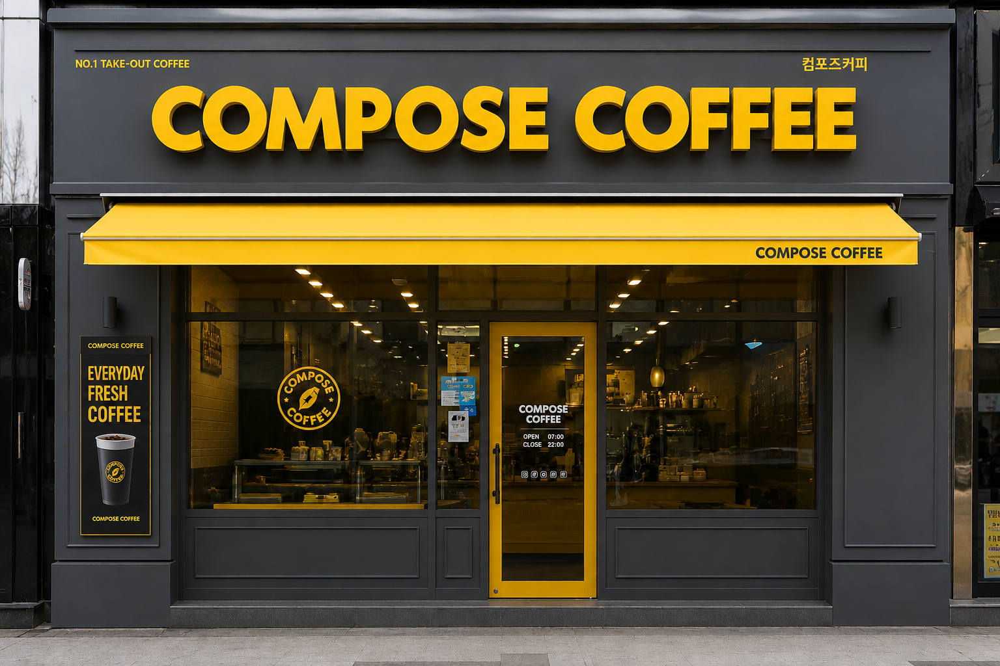

01
낮은 폐점률
표면적인 매출 수치보다 실질적인 매장 수익률을 우선하는 운영 방식을 채택했습니다.
본사와 점주가 함께 성장하는 구조 속에서 오픈 이후 점주 만족도와 다점포 운영 비율이 꾸준히 상승하고 있으며,
이는 숫자로 증명된 안정적인 프랜차이즈 경쟁력입니다.


표면적인 매출 수치보다 실질적인 매장 수익률을 우선하는 운영 방식을 채택했습니다.
본사와 점주가 함께 성장하는 구조 속에서 오픈 이후 점주 만족도와 다점포 운영 비율이 꾸준히 상승하고 있으며,
이는 숫자로 증명된 안정적인 프랜차이즈 경쟁력입니다.
세계 최고 수준의 기술력과 설비 환경을 갖춘 자체 로스팅 공장을 직접 운영합니다.
외부 공급에 의존하지 않고 원두의 선별부터 로스팅까지 전 과정을 내재화함으로써,
언제 어느 매장에서든 최상의 원두 컨디션과 일관된 맛을 유지합니다.
업계 최고 수준의 빅모델을 활용한 대규모 마케팅을 진행하면서도
점주 부담금은 최소화하는 구조를 실현했습니다. 높은 광고 호응도는 브랜드 인지도 상승으로 이어지고,
이는 개별 매장의 실질적인 매출 상승을 견인하는 선순환 구조를 만들어냅니다.

01